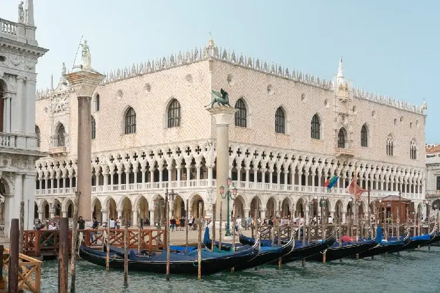
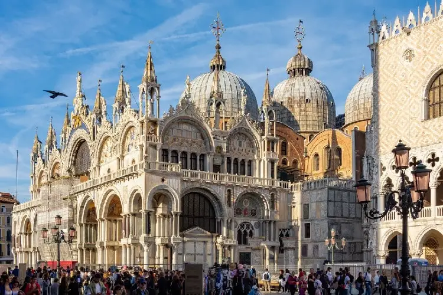

Piazza San Marco

A Praça de São Marcos é o coração de Veneza e um dos lugares mais icônicos da cidade, cercada por belíssimos edifícios e cafés.
Ponte di Rialto

A Ponte di Rialto é uma das mais antigas e famosas pontes sobre o Grande Canal, oferecendo uma bela vista da cidade.
Palacio Ducal
o Palácio Ducal ou Palazzo Ducale é um dos símbolos de Veneza.
Basílica di San Marco
A Basílica de São Marcos é uma catedral impressionante com mosaicos dourados e uma arquitetura singular.